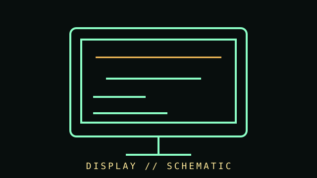

[ SUBCATEGORY DIRECTORY // 5 FILES // 88 PART RECORDS ]
Browse displays subcategories
Each subcategory has its own page and lists individual part records. Open a file to browse its cataloged components.
Browse individually cataloged parts and their dedicated identification, compatibility, and source notes.
OPEN SUBCATEGORY FILE →SUBCATEGORY FILE // 37 PART RECORDSLCD displaysBrowse individually cataloged parts and their dedicated identification, compatibility, and source notes.
OPEN SUBCATEGORY FILE →SUBCATEGORY FILE // 14 PART RECORDSOLED displaysBrowse individually cataloged parts and their dedicated identification, compatibility, and source notes.
OPEN SUBCATEGORY FILE →SUBCATEGORY FILE // 7 PART RECORDSPortable displaysMobile, camera-top and USB-powered monitors with distinct host, battery and field-use requirements.
OPEN SUBCATEGORY FILE →SUBCATEGORY FILE // 9 PART RECORDSProfessional displaysBroadcast and reference monitors with standards-based inputs, modular interfaces and documented calibration/service workflows.
OPEN SUBCATEGORY FILE →[ COMPONENT RECORD // VISUAL OUTPUT ]
Displays &
monitors.
A display converts an input signal into a visible image. CRT, LCD, plasma, OLED, and other technologies have different physical behavior, color characteristics, power needs, and failure modes.

CLASS RECORD: computer monitors and panels. "HDR," refresh, response time, and color claims use different measurement methods; record test conditions and exact model.
Reference specifications
| Panel technology | CRT, TN/VA/IPS LCD, OLED, and mini-LED backlit LCD are distinct implementations. "LED monitor" often describes an LCD backlight, not an emissive LED panel. |
|---|---|
| Image | Native resolution, aspect ratio, pixel density, refresh rate, bit depth, color gamut, luminance, contrast, and viewing angles are model-specific. |
| Inputs | VGA, DVI, HDMI, DisplayPort, USB-C/DisplayPort Alt Mode, and legacy digital interfaces have differing bandwidth, audio, and feature support. |
| Ergonomics | Stand adjustment, VESA mount pattern, power draw, pixel policy, coating, backlight behavior, and accessibility features should be noted. |
Connection & preservation
- Confirm both the source and display support the desired resolution, refresh rate, color depth, variable refresh, and audio path.
- Use the correct cable version and length; adapters may be directional or limit resolution/features.
- CRT displays contain hazardous high-voltage circuits and heavy components. Do not open them without appropriate training and safety procedures.
- For archival displays, record input standards, calibration state, geometry, convergence, brightness, and any adapters/scalers in the signal chain.
- Use manufacturer procedures for pixel cleaning and calibration; avoid pressing on LCD/OLED surfaces.
Sources & further reading
- VESA — Display standardsStandards organization for display interfaces and mounting families.
- VESA — DisplayPort information and FAQInterface feature overview; confirm exact capabilities from device specifications.
- RTINGS — Monitor testing methodologySecondary, measurement-focused explanation of display metrics.